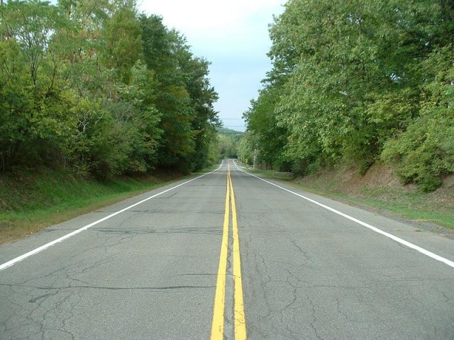
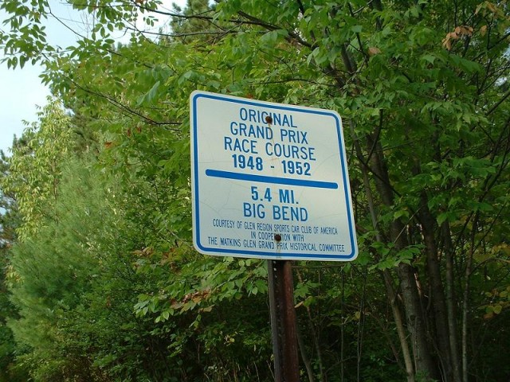
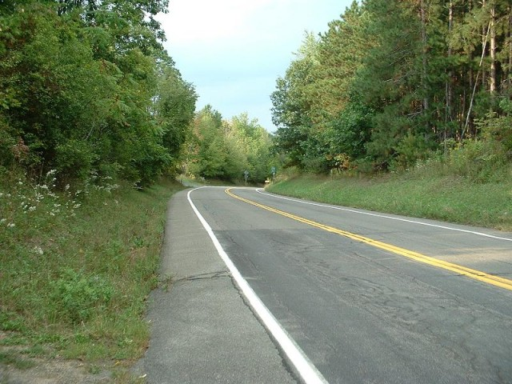
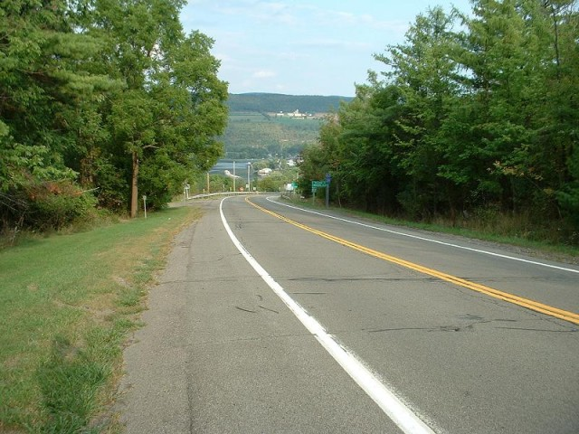
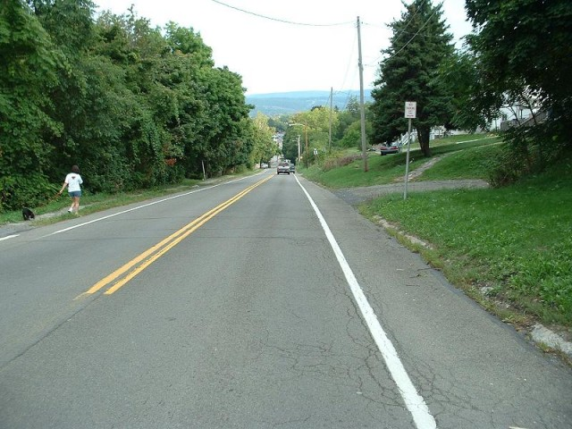
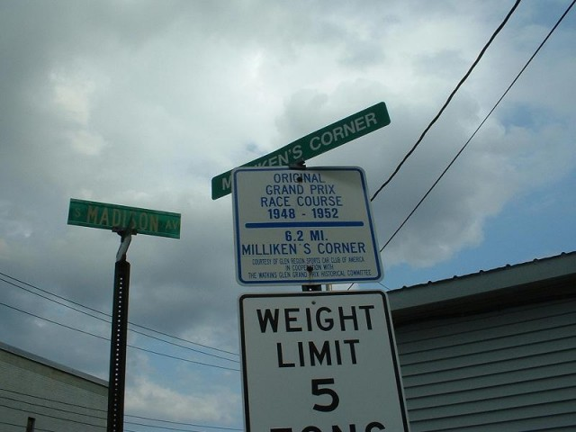
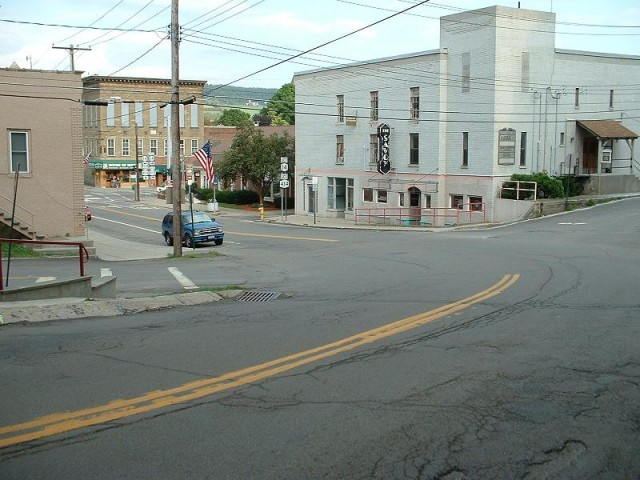

Numbers on the map represent the location where the photographs were taken. Click links above to view the photographs.
Watkins Glen - Big Bend, Miliken's & Finish.
|| Contents || Start to Underpass | School House & Stone Bridge | Archy Smiths to Friars | Big Bend to Finish || Home ||
Numbers on the map represent the location where the photographs were taken. Click
links above to view the photographs.
Return to racingcircuits.net's Photo Archive Main Index

21 - Straight Between Friar's and Big Bend.

Big Ben Road Sign.

22 - Entrance of Big Bend.

23 - Exit of Big Bend, Seneca Lake in Background.

24 - Steep Downhill Stright leading into Milliken's Corner.

Milliken's Corner Sign.

25 - Milliken's Corner.
| << PREVIOUS PAGE |
Photographs and Text ©Cullen Noonen. Reproduced here with kind permission.